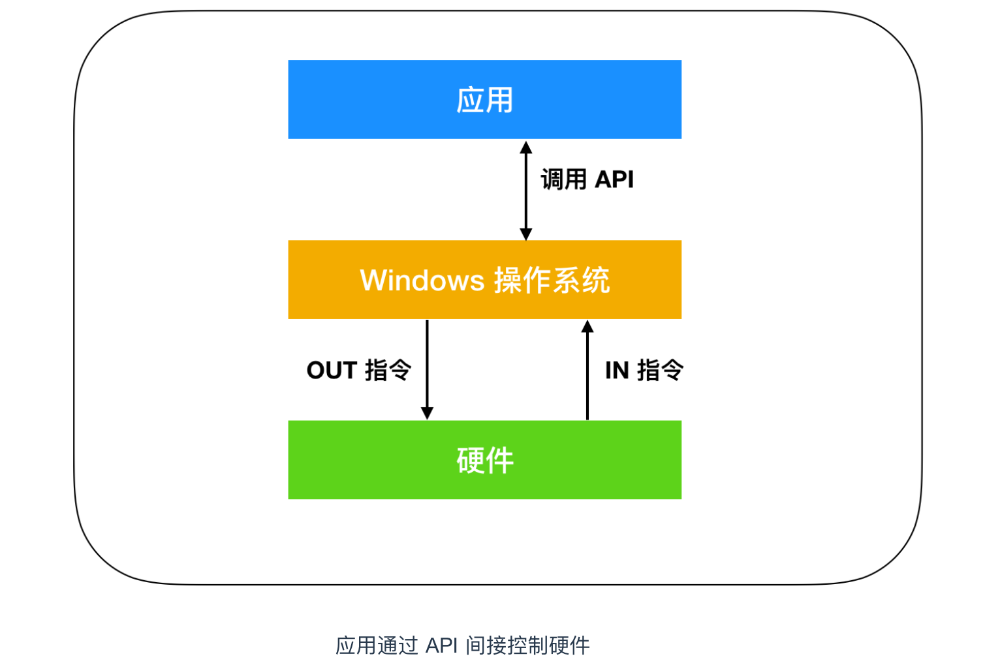
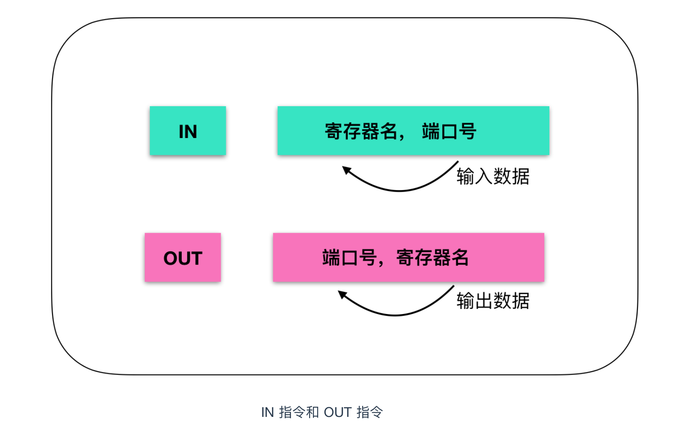
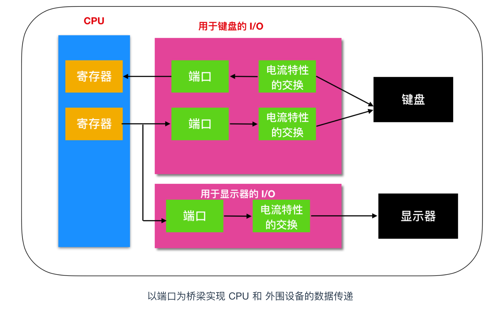
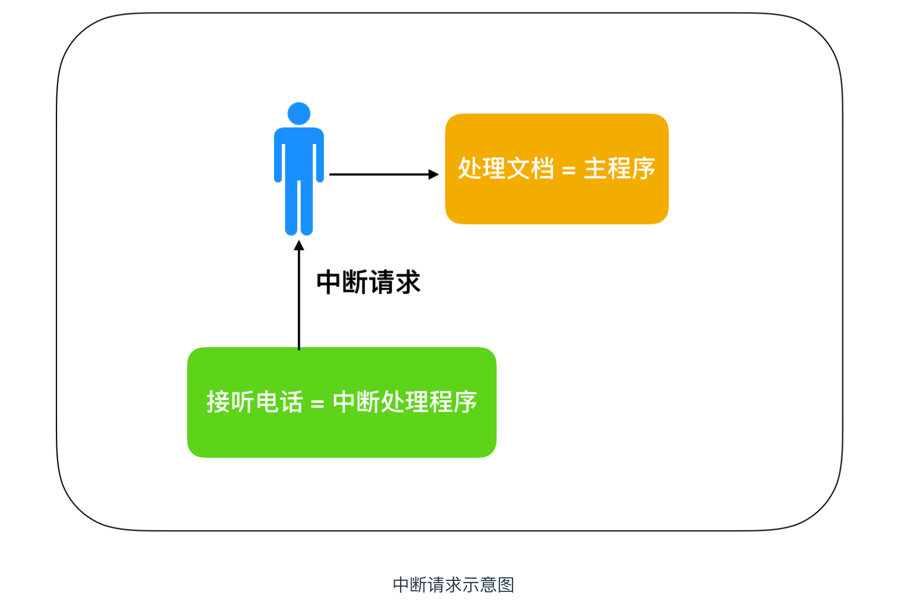
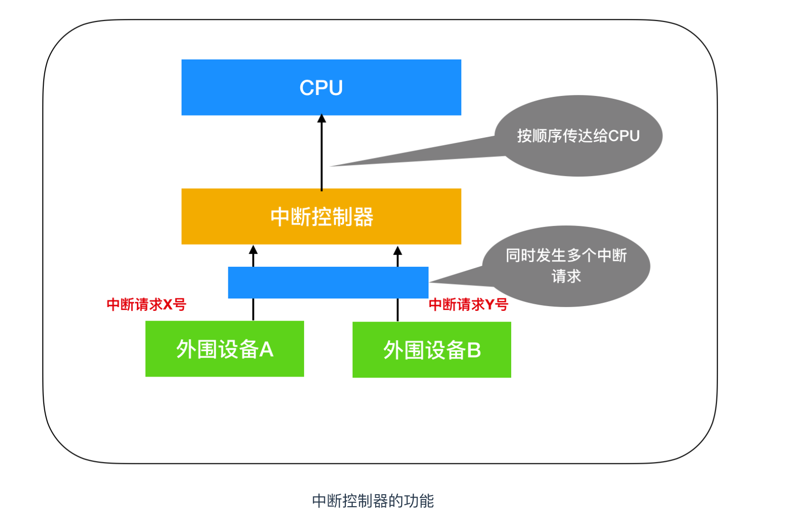
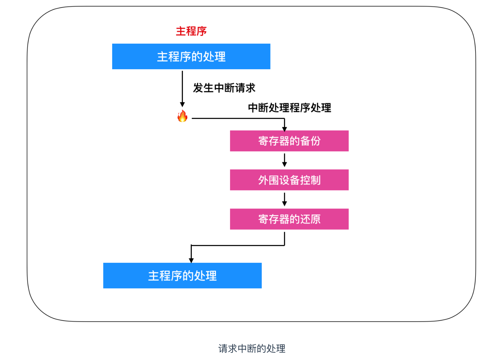
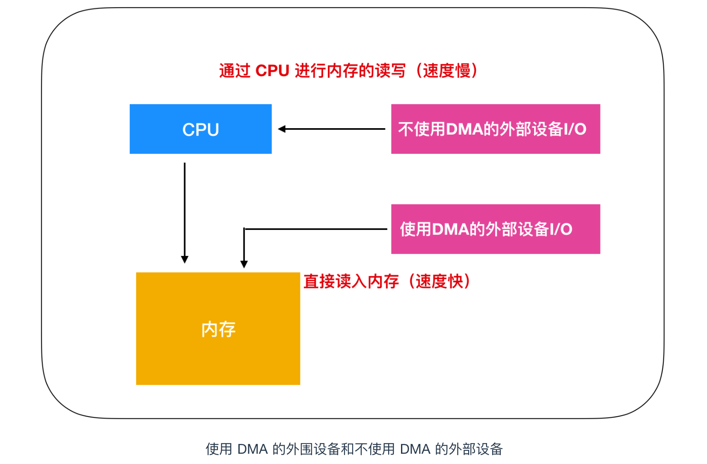
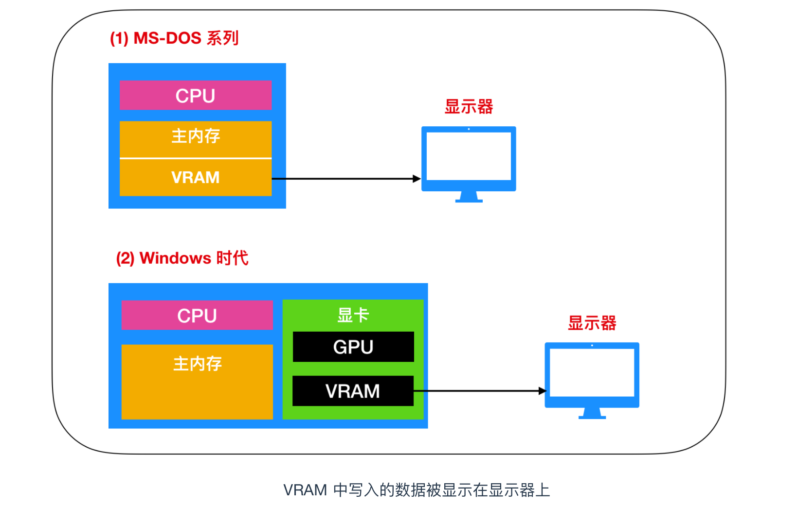

我们作为程序员一般很少直接操控硬件，我们一般通过 C、Java 等高级语言编写的程序起到间接控制硬件的作用。所以大家很少直接接触到硬件的指令，硬件的控制是由 Windows 操作系统 全权负责的。
你一定猜到我要说什么了，没错，我会说但是，任何事情没有绝对性，环境的不同会造成结果的偏差。虽然程序员没法直接控制硬件，并且 Windows 屏蔽了控制硬件的细节，但是 Windows 却为你开放了 系统调用功能来实现对硬件的控制。在 Windows 中，系统调用称为 API，API 就是应用调用的函数，这些函数的实体被存放在 DLL 文件中。

下面我们来看一个通过系统调用来间接控制硬件的实例
假如要在窗口中显示字符串，就可以使用 Windows API 中的 TextOut 函数。TextOut 函数的语法（C 语言）如下
BOOL TextOut{
HDC hdc, // 设备描述表的句柄
int nXStart, // 显示字符串的 x 坐标
int nYStart, // 显示字符串的 y 坐标
LPCTSTR lpString, // 指向字符串的指针
int cbString // 字符串的文字数
}那么，在处理 TextOut 函数的内容时，Windows 做了些什么呢？从结果来看，Windows 直接控制了作为硬件的显示器。但 Windows 本身也是软件，由此可见，Windows 应该向 CPU 传递了某种指令，从而通过软件控制了硬件。
Windows 提供的 TextOut 函数 API 可以向窗口和打印机输出字符。C 语言提供的 printf 函数，是用来在命令提示符中显示字符串的函数。使用 printf 函数是无法向打印机输出字符的。
Windows 控制硬件借助的是输入和输出指令。其中具有代表性的两个输入输出指令就是 IN 和 OUT指令。这些指令也是汇编语言的助记符。
可以通过 IN 和 OUT 指令来实现对数据的读入和输出，如下图所示

也就是说，IN 指令通过指定的端口号输入数据，OUT 指令则是把 CPU 寄存器中存储的数据输出到指定端口号的端口。
那么这个端口号 和 端口是什么呢？你感觉它像不像港口一样？通过标注哪个港口然后进行货物的运送和运出？
下面我们来看一下官方是如何定义端口号和端口的
还记得计算机组成原理中计算机的五大组成部分吗，再来回顾一下：运算器、控制器、存储器、输入设备和输出设备。我们今天不谈前三个，就说说后面两个输入设备和输出设备，这两个与我们本节主题息息相关。
那么问题来了，IO设备如何实现输入和输出的呢？计算机主机中，附带了用来连接显示器以及键盘等外围设备的连接器。 而连接器的内部，都连接有用来交换计算机主机同外围设备之间电流特性的 IC。如果 IC 你不明白是什么的话，可以参考作者的文章 程序员需要了解的硬核知识之内存 进行了解。这些 IC 统称为 IO 控制器。
IO 是 Input/Output 的缩写。显示器、键盘等外围设备都有各自专用的 I/O 控制器。I/O 控制器中有用于临时保存输入输出数据的内存。这个内存就是 端口(port)。端口你就可以把它理解为我们上述说的 港口。IO 控制器内部的内存，也被称为寄存器，不要慌，这个寄存器和内存中的寄存器不一样。CPU 内存的寄存器是用于进行数据运算处理的，而IO中的寄存器是用于临时存储数据的。
在 I/O 设备内部的 IC 中，有多个端口。由于计算机中连接着很多外围设备，因此也就有很多 I/O 控制器。当然也会有多个端口，一个 I/O 控制器可以控制多个设备，不仅仅只能控制一个。各端口之间通过 端口号 进行区分。
端口号也被称为 I/O地址 。IN 指令和 OUT 指令在端口号指定的端口和 CPU 之间进行数据的输入和输出。这跟通过内存的地址来对内存进行读写是一样的道理。

首先让我们利用 IN 指令和 OUT 指令，来进行一个直接控制硬件的实验。假如试验的目的是让一个计算机内置的喇叭（蜂鸣器）发出声音。蜂鸣器封装在计算机内部，但它也是外围设备的一种。
用汇编语言比较繁琐，这次我们用 C 语言来实现。在大部分 C 语言的处理（编译器的种类）中，只要使用 _asm{ 和 }括起来，就可以在其中记述助记符。也就是说，采用这种方式就能够使用 C 语言和汇编语言混合的源代码。
在 AT 兼容机中，蜂鸣器的默认端口号是 61H ，末尾的 H 表示的是十六进制数的意思。用 IN 指令通过该端口号输入数据，并将数据的低2位设定为 ON，然后再通过该端口号用 OUT 指令输出数据，这时蜂鸣器就会发出声音。同样的方法，将数据的低2位设定为 OFF 并输出后，蜂鸣器就停止工作。
位设定为 ON 指的是将该位设定为1，位设定为 OFF 指的是将该位设定为0 。把位设定为 ON，只需要把想要设定为 ON 的位设定为1，其他位设定为0后进行 OR 运算即可。由于这里需要把低2位置为1，因此就是和 03H 进行 OR 运算。03H 用8为二进制来表示的话是 00000011。由于即便高6位存在着具体意义。和0进行OR运算后也不会发生变化，因而就和 03H 进行 OR 运算。把位设定为 OFF，只需要把想要置 OFF 的位设定为0，其他位设定为1后进行 AND 运算即可。由于这里需要把低2位设定为0，因此就要和 FCH 进行 AND 运算。在源代码中，FCH 是用 0FCH 来记述的。在前面加 0 是汇编语言的规定，表示的是以 A - F 这些字符开头的十六进制数是数值的意思。0FCH 用8位二进制数来表示的话是 11111100。由于即便高6位存在着具体意义，和1进行 AND 运算后也不会产生变化，因而就是同 0FCH 进行 OR 运算。
void main(){
// 计数器
int i;
// 蜂鸣器发声
_asm{
IN EAX, 61H
OR EAX, 03H
OUT 61H, EAX
}
// 等待一段时间
for(i = 0;i < 1000000;i++);
// 蜂鸣器停止发生
_asm{
IN EAX, 61H
AND EAX, 0FCH
OUT 61H, EAX
}
}我们对上面的代码进行说明，main 是 C 语言程序起始位置的函数。在该函数中，有两个用 _asm{} 围起来的部分，它们中间有一个使用 for 循环的空循环
首先是蜂鸣器发声的部分，通过 IN EAX，61H(助记符不区分大小写)指令，把端口 61H 的数据存储到 CPU 的 EAX 寄存器中。接下来，通过 OR EAX，03H 指令，把 EAX 寄存器的低2位设定成 ON。最后，通过 OUT 61H，EAX 指令，把 EAX 寄存器的内容输出到61端口。使蜂鸣器开始发音。虽然 EAX 寄存器的长度是 32 位，不过由于蜂鸣器端口是8位，所以只需对下8位进行OR运算和AND运算就可以正常工作了。
其次是一个重复100次的空循环，主要是为了在蜂鸣器开始发音和停止发音之间稍微加上一些时间间隔。因为现在计算机器的运行速度非常快，哪怕是 100 万次循环，也几乎是瞬时间完成的。
然后是用来控制器蜂鸣器停止发声的部分。首先，通过 IN EAX，61H 指令，把端口 61H 的数据存储到 CPU 的 EAX 寄存器中。接下来，通过 AND EAX，0FCH 指令，把 EAX 寄存器的低2位设定为 OFF。最后，通过 OUT 61H，EAX 指令，把寄存器的 EAX 内容输出到61号端口，使蜂鸣器停止发音。
IRQ(Interrupt Request) 代表的就是中断请求。IRQ 用来暂停当前正在运行的程序，并跳转到其他程序运行的必要机制。该机制被称为 处理中断。中断处理在硬件控制中担当着重要的角色。因为如果没有中断处理，就有可能无法顺畅进行处理的情况。
从中断处理开始到请求中断的程序(中断处理程序)运行结束之前，被中断的程序(主程序)的处理是停止的。这种情况就类似于在处理文档的过程中有电话打进来，电话就相当于是中断处理。假如没有中断处理的发生，就必须等到文档处理完成后才能够接听电话。由此可见，中断处理有着巨大的价值，就像是接听完电话后会返回原来的文档作业一样，中断程序处理完成后，也会返回到主程序中继续。

实施中断请求的是连接外围设备的 I/O 控制器，负责实施中断处理的是 CPU，外围设备的中断请求会使用不同于 I/O 端口的其他编号，该编号称为中断编号。在控制面板中查看软盘驱动器的属性时，IRQ处现实的数值是 06，表示的就是用06号来识别软盘驱动器发出的请求。还有就是操作系统以及 BIOS 则会提供响应中断编号的中断处理程序。
BIOS(Basic Input Output System): 位于计算机主板或者扩张卡上内置的 ROM 中，里面记录了用来控制外围设备的程序和数据。
假如有多个外围设备进行中断请求的话， CPU 需要做出选择进行处理，为此，我们可以在 I/O 控制器和 CPU 中间加入名为中断控制器的 IC 来进行缓冲。中断控制器会把从多个外围设备发出的中断请求有序的传递给 CPU。中断控制器的功能相当于就是缓冲。下面是中断控制器功能的示意图

CPU 在接受到中断请求后，会把当前正在运行的任务中断，并切换到中断处理程序。中断处理程序的第一步处理，就是把 CPU 所有寄存器的数值保存到内存的栈中。在中断处理程序中完成外围设备的输入和输出后，把栈中保存的数值还原到 CPU 寄存器中，然后再继续进行对主程序的处理。
假如 CPU 寄存器数值还没有还原的话，就会影响到主程序的运行，甚至还有可能会使程序意外停止或发生运行时异常。这是因为主程序在运行过程中，会用到 CPU 寄存器进行处理，这时候如果突然插入其他程序的运行结果，此时 CPU 必然会受到影响。所以，在处理完中断请求后，各个寄存器的值必须要还原。只要寄存器的值保持不变，主程序就可以像没有发生过任何事情一样继续处理。

中断是指计算机运行过程中，出现某些意外情况需主机干预时，机器能自动停止正在运行的程序并转入处理新情况的程序，处理完毕后又返回原被暂停的程序继续运行。
在程序的运行过程中，几乎无时无刻都会发生中断，其原因就是为了实时处理外部输入的数据，虽然程序也可以在不会中断的基础上处理外部数据，但是那种情况下，主程序就会频繁的检查外围设备是否会有数据输入。由于外围设备会有很多个，因此有必要按照顺序来调查。按照顺序检查多个外围设备的状态称为 轮询。对于计算机来说，这种采用轮询的方式不是很合理，如果你正在检查是否有鼠标输入，这时候发生了键盘输入该如何处理呢？结果必定会导致文字的实时处理效率。所以即时的中断能够提高程序的运行效率。
上面只是中断的一种好处，下面汇总一下利用中断能够带来的正面影响
上面我们介绍了 I/O 处理和中断的关系，下面我们来介绍一下另外一个机制，这个机制就是 DMA(Direct Memory Access)。DMA 是指在不通过 CPU 的情况下，外围设备直接和主存进行数据传输。磁盘等硬件设备都用到了 DMA 机制，通过 DMA，大量数据可以在短时间内实现传输，之所以这么快，是因为 CPU 作为中介的时间被节省了，下面是 DMA 的传输过程

I/O 端口号、IRQ、DMA 通道可以说是识别外围设备的3点组合。不过，IRQ、DMA 通道并不是所有外围设备都具备的。计算机主机通过软件控制硬件时所需要的信息的最低限，是外围设备的 I/O 端口号。IRQ 只对需要中断处理的外围设备来说是必须的，DMA 通道则只对需要 DMA 机制的外围设备来说是必须的。假如多个外围设备都设定成相同的端口号、IRQ 和 DMA 通道的话，计算机就无法正常工作，会提示 设备冲突。
你知道文字和图片是如何显示出来的吗？事实上，如果用一句话来简单的概括一下该机制，那就是显示器中显示的信息一直存储在某内存中。该内存称为VRAM(Video RAM)。在程序中，只要往 VRAM 中写入数据，该数据就会在显示器中显示出来。实现该功能的程序，是由操作系统或者 BIOS 提供，并借助中断来进行处理。
在 MS-DOS 时代，对于大部分计算机来说，VRAM 都是主内存的一部分。在现代计算机中，显卡等专用硬件中一般都配置有与主内存相独立的 VRAM 和 GPU（Graphics Processing Unit），也叫做图形处理器或者图形芯片。这是因为，对经常描绘图形的 windows 来说，数百兆的 VRAM 都是必需的。

用软件来控制硬件听起来好像很难，但实际上只是利用输入输出指令同外围设备进行输入输出而已。中断处理是根据需要来使用的功能选项。DMA 则直接交给对应的外围设备即可。
虽然计算机领域新技术在不断涌现，但是计算机所能处理的事情，始终只是对输入的数据进行运算，并把结果输出，这一点是永远不会发生变化的。
文章参考：
《程序是怎样跑起来的》
https://baike.baidu.com/item/中断控制器/15732992?fr=aladdin
https://baike.baidu.com/item/中断/3933007#viewPageContent
关注公众号后台回复 191106 即可获得《程序是怎样跑起来的》电子书